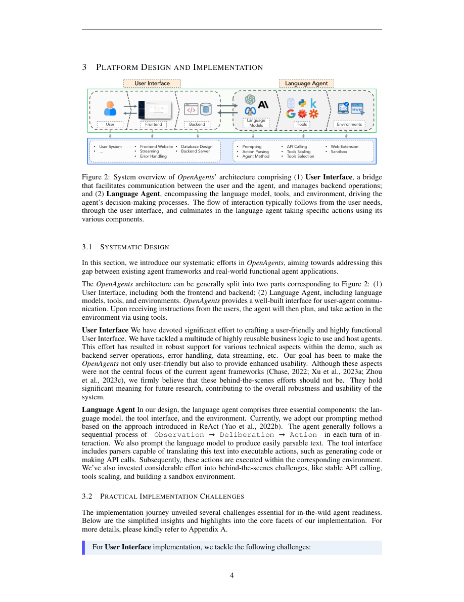
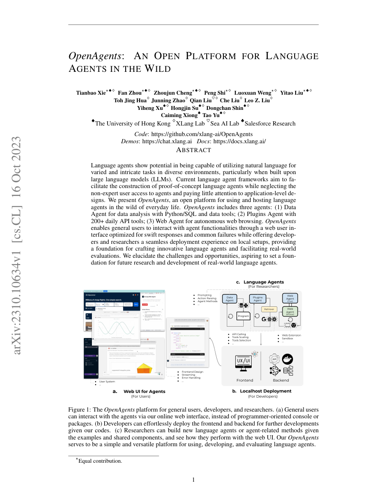
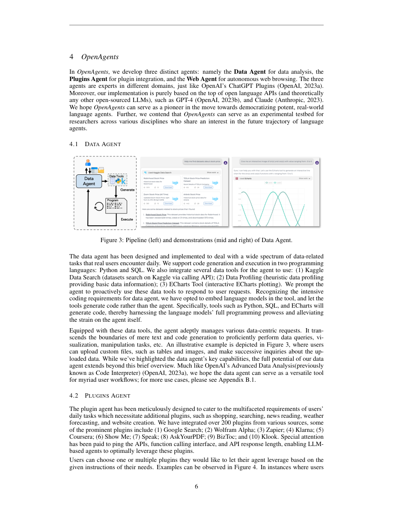
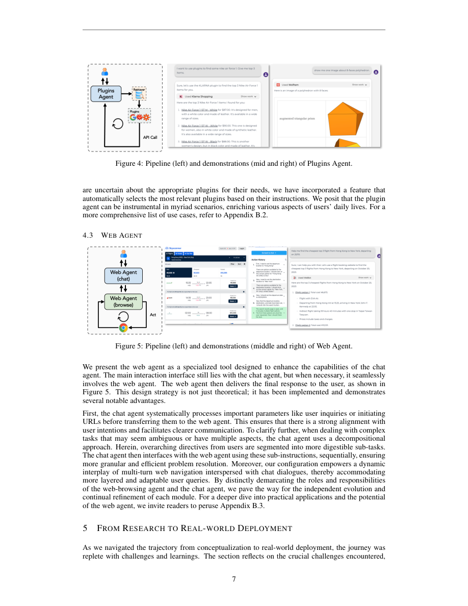
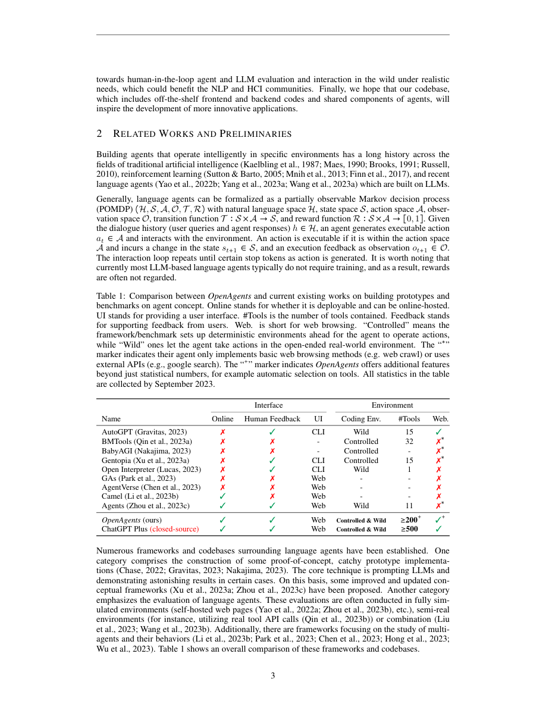
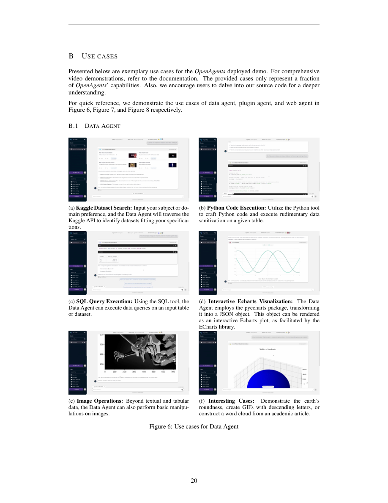
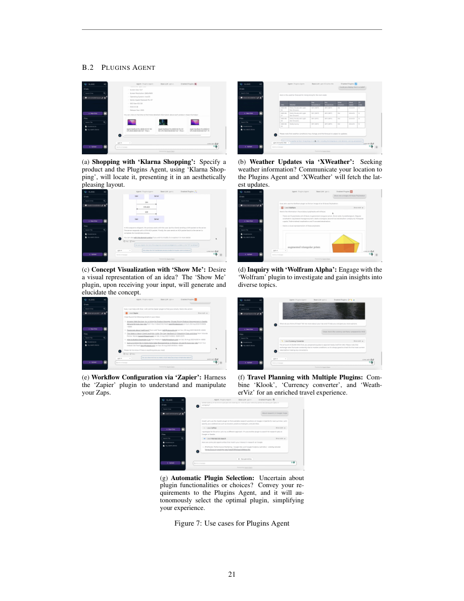
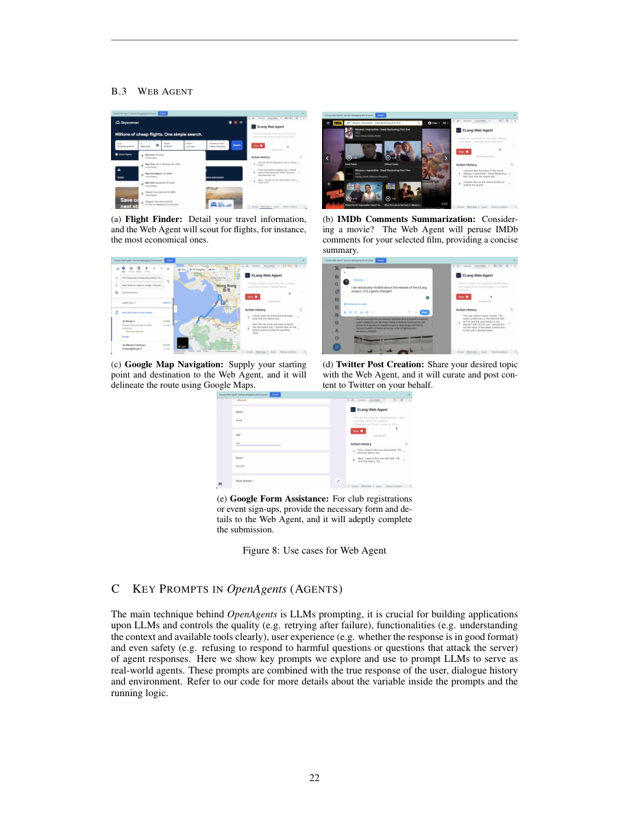

OpenAgents: An Open Platform for Language Agents in the Wild
OpenAgents 不是再做一个 console agent demo，而是把 Data Agent、Plugins Agent、Web Agent 放进一个可在线使用、可本地部署、可研究扩展的开放平台。论文最有价值的部分是把真实用户场景里的 UI、streaming、error handling、token overflow、sandbox、plugin scaling 和 human-in-the-loop evaluation 摆到了 agent 研究前台。
1. 研究动机
作者观察到 2023 年的语言 agent 大多还是 proof-of-concept：框架偏开发者、界面偏 CLI、环境偏 controlled benchmark。真实用户却需要一个能直接上传数据、调用日常 API、浏览网页，并能在失败、延迟、格式错误和安全问题中保持可用的 agent 产品。OpenAgents 的目标就是把 agent 从研究原型推进到“in the wild”的开放平台。
现有框架的问题
LangChain、AutoGPT、BabyAGI 等框架证明了 prompting + tools 的潜力，但通常面向开发者，缺少面向普通用户的 Web UI、错误恢复、流式体验和多用户数据管理。
闭源产品的缺口
OpenAI Advanced Data Analysis、Plugins、Browse with Bing 证明了产品形态，但模型与业务逻辑不开源，限制了用户免费访问，也限制了研究者审计和改进。
论文的定位
OpenAgents 是系统/平台论文：贡献不是新训练算法，而是开放 UI、后端、agent 组件和真实部署经验，让 agent 能被使用、部署、观察和评估。
语言 agent 的 POMDP 视角
论文用 POMDP 形式化语言 agent：自然语言历史空间 $H$、状态空间 $S$、动作空间 $A$、观测空间 $O$、转移函数 $T:S\times A\to S$、奖励函数 $R:S\times A\to[0,1]$。
$$\mathcal{M}=(H,S,A,O,T,R),\qquad h\in H,\qquad a_t\in A,\qquad s_{t+1}=T(s_t,a_t),\qquad o_{t+1}\in O.$$当前多数 LLM-based language agents 不需要训练，所以 reward 往往不直接使用；系统核心变成如何让 LLM 生成 executable action，并在环境反馈后继续循环。
2. 系统架构与算法流程
OpenAgents 架构可以拆成两部分：User Interface 是用户和 agent 的桥，处理前端、后端、用户系统、database、streaming、error handling；Language Agent 则包含 language model、tools、environment，负责 prompting、action parsing、agent method、API calling、tool scaling/selection、web extension 和 sandbox。


Observation
用户输入、文件、网页 DOM、API 返回、代码执行结果和历史对话进入系统，被 DataModel 转成不同接收方可用的表示。
Deliberation
LLM 通过 ReAct-style prompting 进行计划、参数整理、工具选择、任务分解和失败后的下一步判断。
Action
action parser 把文本解析成 Python/SQL、API call、plugin call 或 Chrome Debugger action，并在 sandbox 或浏览器中执行。
Feedback
执行结果作为 observation 返回，系统按 prompt 模板判断是否继续 tool use、retry、终止或给用户最终答案。
从 LLM 文本到可执行动作
一个实用抽象是把 agent policy 写成 $\pi_\theta(a_t\mid h_t,o_t,c_t)$，其中 $c_t$ 包含 tool specs、UI state、grounding files、system prompt 和 history truncation 后的上下文。action parser $P$ 把模型文本 $y_t$ 映射为可执行动作：
$$y_t\sim p_\theta(\cdot\mid h_t,o_t,c_t),\qquad a_t=P(y_t),\qquad o_{t+1}=E(a_t).$$OpenAgents 的工程重点就在 $c_t$、$P$ 和 $E$：如何构造上下文、如何让输出可解析、如何在真实环境里安全执行并恢复失败。
| 模块 | 论文实现 | 工程含义 |
|---|---|---|
| DataModel | 将 text、code、image、table、database 等 raw data 转成给 human、frontend、computational system、LLM 各自适合的格式。 | agent 平台不能只把所有东西转成字符串；不同数据要有多视图表示和持久化策略。 |
| Strategic storage | 临时变量在内存，global variables 放 Redis，用户对话和用户数据放 MongoDB。 | 真实多用户平台必须区分 ephemeral state、global state 和 user-owned persistent state。 |
| Streaming parser | 用 streaming API 和 pushdown automata 思路识别 token role，边生成边渲染或解析 tool call。 | 用户体验不是只看最终正确率；长输出必须尽早可见，同时内部 action token 不能误显示。 |
| Robustness | 处理 API failure、LLM API key pool、stop/retry、remote API timeout、错误分类、history truncation 和 token overflow。 | 部署 agent 要把 rate limit、失败重试、用户中断和上下文长度当成一等设计对象。 |
| Executable environments | SQLite、Kaggle Docker-based Python sandbox、RESTful API wrapper、Chrome extension + Chrome Debugger。 | action space 越真实，sandbox、权限、可见性和用户可接管能力越重要。 |
Streaming 角色识别
Appendix A.1.4 把实时 token role parsing 关联到 pushdown automata。论文给出的状态转移形式为：
$$\delta:Q\times(\Sigma\cup\{\epsilon\})\times\Gamma\to\mathcal{P}(Q\times\Gamma^*).$$直观含义是：每读入一个字符或空转移，parser 根据当前状态和栈顶判断新状态。新状态代表当前 token 属于 plain text、tool call、参数、内部 thought 或特殊标记，从而决定前端如何渲染、后端如何执行。
Data Agent
支持 Python、SQL、Kaggle Data Search、Data Profiling、ECharts Tool。作者刻意让 Python/SQL/ECharts tool 内部调用 LLM 生成代码，以减轻 agent controller 负担。
Plugins Agent
集成 200+ plugins，用户可手动选一个或多个插件，也可通过 Instructor embedding 自动选最相关工具；实现时特别关注 API ping、function calling interface 和 API response length。
Web Agent
Chat agent 负责理解需求、整理 URL/参数和分解任务，Web Agent 负责实际浏览。Chrome extension 让用户看到、打断或接管浏览动作。
3. 证据与复现细节
这篇论文没有传统意义上的 benchmark leaderboard。它的证据由三类组成：Table 1 横向比较平台能力，Figures 3-8 展示三个 agent 的 pipeline/use cases，第 5 节和 Appendix 解释真实部署中遇到的系统问题。复现时应把它当成可部署系统，而不是单个模型算法。
| Name | Online | Human Feedback | UI | Coding Env. | #Tools | Web |
|---|---|---|---|---|---|---|
| AutoGPT | ✗ | ✓ | CLI | Wild | 15 | ✓ |
| BMTools | ✗ | ✗ | - | Controlled | 32 | ✗* |
| BabyAGI | ✗ | ✗ | - | Controlled | - | ✗* |
| Gentopia | ✗ | ✓ | CLI | Controlled | 15 | ✗* |
| Open Interpreter | ✗ | ✓ | CLI | Wild | 1 | ✗ |
| Generative Agents | ✗ | ✗ | Web | - | - | ✗ |
| AgentVerse | ✗ | ✗ | Web | - | - | ✗ |
| CAMEL | ✓ | ✗ | Web | - | - | ✗ |
| Agents | ✓ | ✓ | Web | Wild | 11 | ✗* |
| OpenAgents | ✓ | ✓ | Web | Controlled & Wild | ≥200+ | ✓+ |
| ChatGPT Plus closed-source | ✓ | ✓ | Web | Controlled & Wild | ≥500 | ✓ |
复刻自 Table 1。星号表示仅有 basic web browsing 或依赖外部 API；加号表示 OpenAgents 在统计数量之外还提供自动工具选择等额外能力。统计截至 2023 年 9 月。
环境与依赖
- LLM backend 理论上支持开放 API 或开源 LLM；论文明确提到 GPT-4 和 Claude。
- Data Agent 使用 Python、SQL、Kaggle Data Search、Data Profiling、ECharts Tool。
- Python sandbox 参考 Kaggle Dockerfile，SQL 执行使用 SQLite。
- Plugins Agent 从 RapidAPI、OpenAI plugins store 等来源扩展到 200+ plugins。
- Web Agent 通过 Chrome extension 和 Chrome Debugger API 控制用户侧浏览器。
论文没有给出的内容
- 没有统一 benchmark 数字、成功率、延迟分布或用户研究统计。
- 没有列出完整 prompt 变量展开、API key 管理、服务端部署拓扑和安全策略细节。
- 没有完整比较不同 LLM backend 在三个 agent 中的性能差异。
- use cases 主要是演示，不能替代严格评测。


4. 核心结论与真实部署教训
OpenAgents 的核心结论是：agent 研究如果要进入真实世界，必须把应用级需求纳入评估。prompt 格式、前端渲染、流式输出、API timeout、用户中断、CAPTCHA、广告、上下文溢出、数据存储和工具选择都会影响用户感知到的 agent 能力。
| 真实部署问题 | 论文观察 | 对 agent 研究的含义 |
|---|---|---|
| Prompt burden | 为了 backend parse、输出美观、防攻击、工具使用和错误处理，system prompt 会积累到数百 tokens。 | instruction tracking 和 long context 是产品能力，不只是 benchmark 能力；专门训练 agent model 可能比纯 prompt 固定大模型更可控。 |
| Uncontrollable factors | API crash、用户中断、CAPTCHA、广告改变网页结构都会破坏研究中常见的 deterministic 假设。 | controlled environment 不能覆盖真实 web/API 的随机性，评估应包含故障注入和恢复能力。 |
| Experience metrics | streaming 让用户更早看到响应，格式化 prompt 影响输出观感；准确率高但响应慢可能产品体验差。 | agent evaluation 需要 latency、time-to-first-token、error transparency、user interruption、retry rate 等指标。 |
| System attribution | 失败可能来自 LLM，也可能来自业务逻辑不支持下载、API 接口变更、parser 错误或 frontend 限制。 | 评测需要 failure taxonomy，把 model limitation 和 system bug 分开归因。 |
为什么它有意义
论文把 agent 的“可用性”具体化为一批工程对象：DataModel、stream parser、tool selector、sandbox、Chrome extension、API wrapper、timeout、retry、history truncation。很多 agent 论文只在方法图中出现的灰色模块，这里被展开成真实代码要解决的问题。
为什么它还不够
它证明了平台设计思路和 demo 可行性，但没有给出严谨用户研究、失败率统计、成本/延迟曲线、安全红队结果或与闭源产品的可控对比。作为系统论文，它更像 blueprint 与经验报告。
5. Figure / Table 导航
PDF 图像提取会把很多图拆成碎片，所以本页使用完整页截图，保留图注与上下文。关键图覆盖平台、架构、三类 agent 和 Appendix use cases。




6. 复现清单
复现 OpenAgents 的重点不是跑一个固定脚本，而是部署一个多组件系统并核对三个 agent 的行为。论文提供代码、demo 和 docs；Appendix C/D 给了关键 prompts，但严格复现还依赖外部 LLM API、第三方插件、浏览器权限和服务端部署环境。
最小复现路径
- 拉取
xlang-ai/OpenAgents，按 docs 配置 frontend、backend、MongoDB、Redis 和 LLM API。 - 先跑 Data Agent：上传 CSV/Excel，测试 Python、SQL、Data Profiling、ECharts，检查 sandbox 和 DataModel 渲染。
- 再跑 Plugins Agent：配置若干插件 API，测试手动选择和 embedding-based auto selection。
- 最后跑 Web Agent：安装 Chrome extension，测试 click/type/finish、用户中断和失败恢复。
- 记录每一步的 latency、API failure、parser failure、tool success、user interruption 和 final answer quality。
复现风险
- 论文依赖 2023 年的 API 生态，RapidAPI/OpenAI plugin store/第三方网站可能已经变化。
- 真实网页会出现 CAPTCHA、广告、DOM 变化和地区限制，导致结果不稳定。
- LLM backend 未固定具体 snapshot 和 decoding 设置，prompt 效果可能随模型版本变化。
- 安全边界需要额外审计，尤其是 Python sandbox、浏览器控制、用户文件和 API key 管理。
| 组件 | 论文给出的线索 | 复现时应补的日志 |
|---|---|---|
| Prompting | Appendix C/D 展示 Data/Plugins/Web agents 和 SQL/API/WeBot executor prompts。 | 完整变量展开、prompt 版本、上下文长度、截断策略、模型输出原文。 |
| Tools/API | 200+ plugins、Kaggle、SQLite、ECharts、RESTful API wrapper。 | API endpoint 版本、timeout、retry 次数、失败原因、响应长度。 |
| Browser | Chrome extension + Chrome Debugger，用户可见、可打断、可接管。 | DOM snapshot、action trace、失败 action、用户介入时间点。 |
| User feedback | 论文设想 in-the-wild human-in-the-loop evaluation。 | 显式满意度、任务完成标签、纠错轨迹、会话后人工标注。 |
7. Reviewer Critique
作为 reviewer，我会把这篇论文视为“开放 agent 平台与部署经验报告”，而不是算法论文。它的重要性在于揭示了真实系统约束；证据薄弱点在于缺少量化评估。
优点
- 把普通用户 Web UI、本地部署、研究扩展三个目标统一起来，平台定位清楚。
- Appendix 的 DataModel、streaming、failure handling、token overflow、Chrome extension 细节对后续系统很有参考价值。
- 三类 agent 选得有代表性：数据分析、API tool use、web browsing 基本覆盖 2023 年最重要的 agent 产品形态。
- 明确指出真实部署指标和 controlled benchmark 之间的差距，这一点在今天仍然成立。
不足
- 没有严谨定量结果：缺少成功率、延迟、成本、用户满意度、失败归因和安全评测。
- 与 ChatGPT Plus 的比较主要是功能表，不是同任务、同用户、同时间窗口下的可控对比。
- 安全讨论不足：Python sandbox、浏览器控制、用户文件、API keys 和第三方插件都需要 threat model。
- prompt 依赖很重，论文没有说明跨模型迁移、prompt drift 和模型版本升级时如何回归测试。
我会要求补充的实验
至少补一个 50-100 个真实任务的 human-in-the-loop study：报告任务完成率、time-to-first-token、总耗时、用户中断率、API/tool failure rate、LLM/parser/system bug 归因、用户满意度，并按 Data/Plugins/Web 三类 agent 分别统计。
8. 对后续研究的启发
OpenAgents 对 agent、自进化、RLVR 和 evaluation 的启发很直接：只训练会“想”的模型不够，还要训练或约束它在真实系统边界内“做得稳”。
Agent evaluation
把 evaluation 拆成 model、parser、tool、environment、UI、user feedback 六层。失败归因比一个最终分数更有价值。
RLVR / 自进化
OpenAgents 的 action traces、tool outputs、retry history、user interruption 都可转成可验证训练信号，用来训练更稳的 action policy。
Replay 与多样性
真实用户任务天然提供多样 replay buffer，但必须保存环境快照、API 响应和网页 DOM，否则无法复盘和做离线评估。
一句话带走
如果一篇 agent 论文没有讲清楚 UI、state、tool permissions、failure recovery、latency、human takeover 和 logging，它还只是 agent demo，不是可部署 agent system。